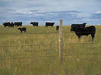
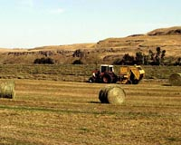
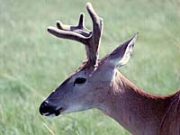
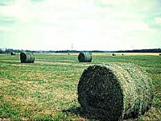

|

Importance of forage.
Forage production helps to diversify the agricultural economy of the province. Forage crops are considered the
third most important crop in Saskatchewan, after wheat and canola.
Forage production helps in soil management, providing a rotation option, as well as aiding in the prevention of soil erosion, and helping to increase nutrient levels in the soil.
Forages include annual and perennial legumes and grasses.
Legumes
- have thick tap roots that penetrate deeply into the
soil
- produce a high protein feed
- add nitrogen to the soil, thereby increasing the soil's fertility For this reason they are an excellent addition to a crop rotation, especially on the less fertile grey-wooded soils.
- [More on Legumes]
Grasses
- have fibrous roots which add to
the organic content of the soil
- roots help prevent wind and water erosion
- often withstand extreme climatic and soil conditions and
are long-lived
- [More on Grasses]
Seeded pastures typically contain at least half grass, a combination that reduces
the bloating problems in livestock commonly associated with a legume rich unprocessed feed.
Why are they produced?

Growing forage crops can be advantageous for the farmer and the land. Forage crops
can be baled and stored - providing winter feed for livestock, when grazing is not possible.
Forage crops provide year-round stands that offer protection to the land from the effects
of the environment; wind and water
erosion and in some cases, soil salinity. Rotations that include forage can help upset pest
cycles (disease, insect and weeds) and the deep root systems help hold the soil together.
Organic matter of the soil may be built-up by planting otherwise 'dormant' land. Legume or
pulse forages help to increase the N-content of the soil by fixing nitrogen.
Forage crops are easier to grow than some cereals and oilseeds, store better and
can be used to feed livestock
thus turning a fairly decent profit for the farmer who plants forage crops.
Where is forage produced?

Forage may be grown throughout Saskatchewan and may be grown on sections of land that are not suited to other crops. Forage crops are best suited to the brown, dark brown and black-gray-wooded soil zone areas of the province.
Places where forage is grown include:
- pastures
- as seeded crops
- ditches and roadways
- waterways
- riparian areas
How are forage crops used?

In addition to the use of forage in soil management, there are other markets for forage. Native and tame pasture constitutes a major source of ruminant feed, during the summer months. Pastures must be carefully managed so that the livestock does not damage the forage stand by
over-grazing. Annual pasture is commonly planted, especially for
spring and fall grazing. Fall rye and winter wheat are popular
annual pasture.
Forage may be annual or perennial; cultivated or native. Additional examples of forage use are:
- Pasture feed for beef cattle, dairy cattle, horses and sheep
- Silage and hay for on-farm livestock feeding
- Seed and turf production
- Wildlife feed and protection
- Land rehabilitation (mining industry, road-construction industry)
- Alfalfa production for domestic and overseas markets (dehydration and suncured
pellets as feed for poultry, rabbits, beef, swine)
What are some forage crops?
Forage production can be successful, if crops are selected for the soil and environmental conditions of the area as well as the nutritional qualities (livestock feed) and plant responses to different management techniques. There are several forage species adapted
to Saskatchewan. The following table outlines the most common forages that are used for livestock feed.
Forage Crops of Saskatchewan
| Legumes |
| Alfalfa |
- is a widely-adapted productive legume; grows best in well-drained loam
- tap-rooted types well-suited to hay production
- creeping-rooted types are hardier (better for grazing)
- moderately saline tolerant; intolerant of acidity
- causes bloat in livestock if grazed at the bud stage or earlier; usually sown in combination with grass
- uses leafcutter bees for better pollination (seed production)
|
| Alsike Clover |
- adapted cool, moist growing conditions; grows well in grey-wooded soil zone and in alkaline soils
- short-lived perennial legume; often grown for seed and seldom for forage; reseeds itself
- high tolerance to spring flooding and saturated or acidic soils
- not tolerant of drought or salinity
- can cause bloat in livestock
|
| Birdsfoot Trefoil |
- perennial plant that does not cause bloat
- moderate salinity tolerance and good tolerance to spring flooding, acid and saturated soils
- poor competitor with weeds or other forage species
- not usually grown for forage
- may be overgrazed as it is very palatable to livestock; must have 4 to 6 weeks to recover if overgrazed
|
| Red Clover |
- short-lived, acid tolerant perennial adapted to grey-wooded soil zone
- intolerant of drought and salinity
- hay is slow-drying due to moisture content of plant
- can cause bloat in livestock
- not grown for forage in many areas because alfalfa and sweet-clover produce higher yields
|
| Sainfoin |
- tall perennial (can reach 1m); adapted to same areas as alfalfa
- moderate salinity tolerance; drought tolerant due to deep penetrating, branched taproot
- not competitive with weeds or other forage species
- does not cause bloat
- slow regrowth and does not persist because it is highly palatable
|
| Sweet Clover |
- hardy, drought resistant upright (1 to 2m) biennial
- adapted to wide range of soil types; prefers well-drained clay and loam soil
- spoiled crop can cause formation of blood anticoagulating substance (bleeding disease) in livestock; use of certain varieties can reduce risk of disease
- can cause bloat
|
| Grasses |
| Altai Wild Rye |
- long-lived, hardy, saline-tolerant perennial pasture grass
- grows best in loam and clay loams of the brown and dark-brown soil zones
- moderately creeping, with coarse, wide leaves
- makes excellent pasture in early spring, late fall and early winter
- very good nutritive value
|
| Creeping Red Fescue |
- winterhardy, creeping, low-growing pasture grass
- grows in black and grey-wooded soil zone
- may gradually take over pasture under heavy grazing
|
| Crested Wheat Grass |
- grows best in black and grey-wooded soil zones
- extremely long-lived, hardy, drought tolerant bunchgrass
- grows 60 to 90 cm high, will go dormant under dry conditions and recover when moisture levels are adequate
- moderately salt tolerant; well-adapted to sandy soils
- useful as spring pasture; also used as hay
- tasty to livestock before plant sets seed; palatability declines as growing season advances
|
| Dahurian Wildrye Grass |
- newly developed; short-lived, high-yielding, shallow-roots
- quick to establish, adapted to all soil zones
- tolerant of saline conditions
- competes well with weeds and other forages
|
| Intermediate Wheat Grass |
- high-yielding, tall, creeping-root hay grass
- slow-to-mature, short lived (3 to 4 years) under intensive grazing; good for hay mixtures with alfalfa
- adapted to all soil zones; moderately tolerant to salinity and saturated soils
|
| Kentucky Bluegrass |
- long-lived, low growing, creeping-rooted grass
- winter-hardy; adapted to high moisture conditions
- increases on overgrazed pastureland
|
| Meadow Brome Grass |
- creeping pasture grass; rapid regrowth
- used for hay; vegetative growth palatable
- higher proportion of leaf than smooth brome grass so a nutritive advantage
- not as hardy as smooth brome grass
|
| Reed Canary Grass |
- long-lived, flood and saturated-soil tolerant; high yields
- forms a strong sod and grows 1-2m tall; produces large amounts of leafy foliage
- not salt tolerant
- livestock prefer plant before flowering; plant not as palatable as other grasses
|
| Russian Wildrye Grass |
- long-lived, drought tolerant, hardy pasture grass
- adapted to all soil zones; prefers dryer parts of black soil zone
- lots of leaves produced; early growth in spring
- used in rotational grazing system; less palatable than other grasses
|
| Smooth Brome Grass |
- long-lived creeping grass best suited for hay production
- grows well in the dark brown, black and grey-wooded soil zones
- reaches height of 1 m; palatable to livestock as both pasture and hay
- can be overgrazed and replaced by Kentucky Bluegrass and Creeping Red Fescue
|
| Slender Wheat Grass |
- short-lived native grass that is salt tolerant
- establishes very quickly; not very palatable to livestock
- adapted to all soil zones
|
| Tall Wheat Grass |
- long-lived, coarse bunchgrass
- very saline tolerant (the most salt-tolerant of all the grasses) so ideal for planting on saline soils
- can be cut for hay but not as palatable as in pasture
|
| Timothy |
- shallow-rooted, produces good quality, high yield hay
- long-lived bunchgrass and is well suited to peat soils
- not drought or saline tolerant, requires lots of moisture or irrigation for high yields
- good in rotation, palatable and can be overgrazed
- grows in black and grey-wooded soil zones
|
Other Forages include:
- Corn - is harvested as silage
- Spring Cereals - oats and barley are used extensively as companion crops for perennial forage seedings
and are usually harvested for silage; cereals can also be used
for hay or pasture. Cereal silages are higher in protein than corn silage but usually lower than good quality alfalfa haylage. Energy values are lower than corn silage and often comparable to alfalfa haylage. Oats are preferred over barley for pasturing and hay due to their higher palatability.
- Mixed grain and spring wheat
- Winter Cereals (Rye, Triticale, Wheat) - provide fall and early
spring grazing. Adequate nitrogen fertility in the spring will
provide good stored feed yields by late May. Like spring cereals,
feed quality decreases as the crop matures.
- Oats and Peas - field peas seeded in mixture with oats will increase forage yields and enhance feed quality. Pea mixtures have increased protein levels and improved feed digestibility.
- Sorghum-Sudan Grass, Sudan Grass - members of the sorghum family can be used for silage, green chop
or pasture.
How are forages produced?
Forages are either perennial or annual plants. Perennials may take longer to establish, but are typically long-lived -- from 4 to 30 years. Annual forages are seeded each year and some of these types are utilized in crop rotations. In order that the producer has success in growing forages, proper plant management is important. Several publications are available that outline the importance of rangeland management. Overgrazing of pasture can become a serious problem and lead to soil degradation, waterway contamination and loss of profit for the producer. Understanding the growth of forages is important for their management.
Growth of Forages
Most vascular flowering plants contain organs (stem, root, leaf, flower) and meristematic tissue. It is at the meristematic tissue that growth of the plant occurs. This tissue can be found at the tip of the stem, ends of roots or tips of side branches, depending upon the type of plant. The plant grows by the division of the cells in the meristematic area. Larger plants such as trees have meristematic tissue in the trunk of the tree, allowing for growth in width as well.
Apical meristems give rise to specific above-ground structures (like leaves, stems and flowers) as well as below-ground structures (roots, rhizomes). In grasses, growth occurs above-ground at the tip of the stem. When this portion is grazed or cut off, growth of the plant stops. New growth comes from structures called axillary buds, found in the crown or in the lower portion of the plant. In legume plants, if apical meristems are grazed off, growth comes from dormant meristematic tissue located in the axils of leaves or in the crown. This may take a long time and the plants may not recover in a growing season. Thus, forages may be grazed or mowed, as long as meristematic tissue remains to produce new growth for the plant.
Nutritional value of forages depends not only upon environmental conditions, but the stage of growth of the plant. More carbohydrates are stored in the plant in the stage of growth when buds form than in the seed-forming stage and after the plant has been cut (or grazed), carbohydrate levels drop as new leaves are formed. This information is important to the producer who rotates grazing pastures to ensure plants have the chance to recover and continue to grow into the next season.
Storage of Forage

Baling of sun-cured hay is still the most common method of
preserving forage crops. Large round bales have replaced small
square bales in most haying operations.
Silage is increasingly
popular with beef cattle producers, and has been a mainstay of the
dairy industry for many years. Silage uses forage of higher
moisture content and preserves it through fermentation. The major advantage of silage is
that the crop can be harvested when it is ready in almost all weather conditions. Few nutrients are lost.
Several
processing plants dehydrate alfalfa and form it into
pellets or cubes. Densified hay bales are made by compacting
regular small square bales into compact bales for efficient
transport.
|